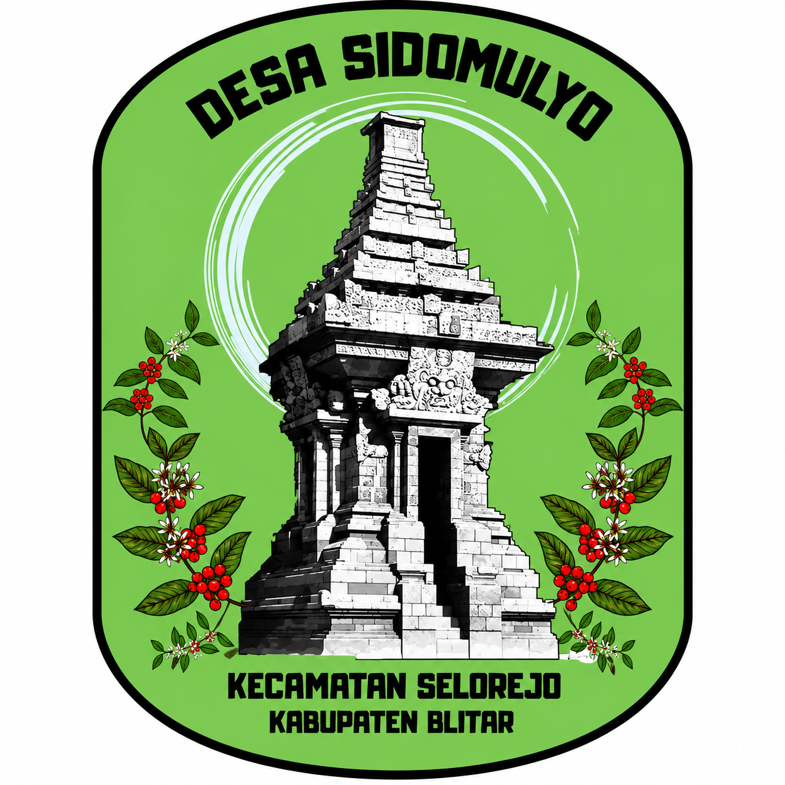

SISTEM INFORMASI PENGHITUNGAN SUARA TERINTEGRASI
PILKADES 2026
MOMENTUM KEMANDIRIAN DESA
JUJUR → DIPERCAYA → MANDIRI
TRANSPARANSI HARGA MATI, KEJUJURAN HARGA DIRI
Tumbuh kepercayaan, dari kepercayaan tumbuh kemandirian.
Tumbuh kepercayaan, dari kepercayaan tumbuh kemandirian.
HITUNG MUNDUR
Menuju Hari H dan Jam D Pemungutan Suara
000Hari
00Jam
00Menit
00Detik
Senin Wage, 23 November 2026Pukul 07.00 WIB
DESA PENYELENGGARA PILKADES
BANJARSARISaatnya Transparansi Menjadi Panglima.

SIDOMULYOSaatnya Rakyat Tahu, Bukan Sekadar Memilih.
SUMBERAGUNGSaatnya Demokrasi Tak Berhenti di Bilik Suara.